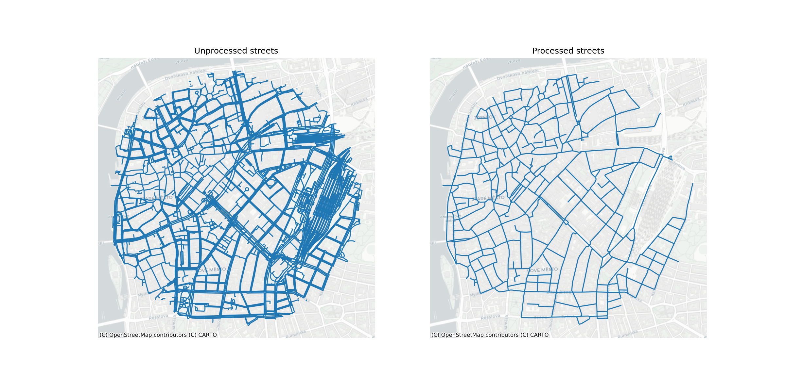
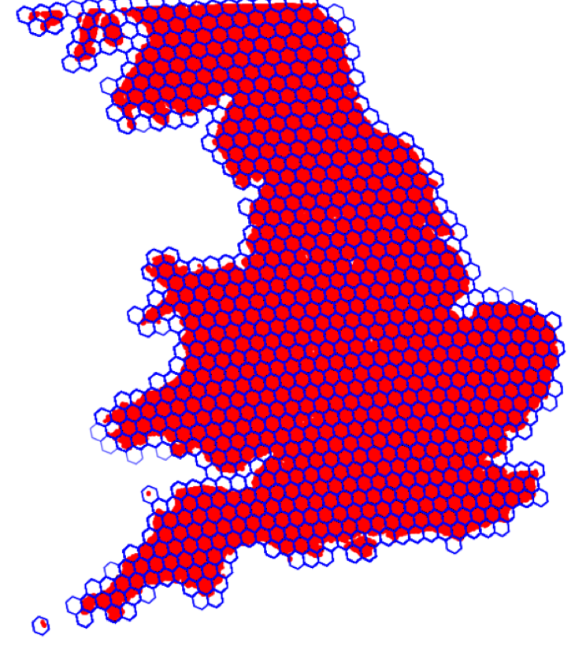

Algorithm Design and Theoretical Basis Description
Technical Note D2
Executive summary
The detailed classification of urban form can provide valuable insights into the structure of cities and towns, guide targeted policy applications, and form the backbone of urban planning. However, classification of this sort are scarcely available and even fewer are detailed, scalable, and consistent while reflecting the nature of the local data all at the same time. We often see conceptual classification, which has a tendency to oversimplify the structure when “zooming in”, loosing the interest of planners and policy-makers. The classifications developed by key members of the EuroFab project team overcome these limitations, but are dependent on the availability of high quality data capturing urban form, e.g. individual buildings and related street networks. The issue is that these are not always readily available, even within the context of generally data-rich countries of the European region. Therefore, there is a need to derive such classification from suboptimal data that do not have the same qualities as, for example, cadastre would have, but have consistency and continental coverage. This Technical Note outlines the theoretical and methodological bases for two models - one based on satellite-derived building footprints; and a second, based on a direct use of Sentinel-2 visible bands. The models aim to adress the data issues presented above, while maintaining the quality of urban classification needed by practioners.
The first model, which we can call morphological, uses the Microsoft Open Buildings footprints dataset of a remote-sensing origin and predicts the classes provided by an authoritative target classification based on cadastral data. It measures morphological variables based on building footprints, linked to street network coming from the Overture Maps project and uses the measurements to predict the authoritative classification using non-linear tree-based ensemble models. The evaluated models are trained using spatially explicit splits and are extensively tested for a robustness of prediction in an out-of-sample context. We further use the results of the models as an iterative feedback loop allowing gap-filling of the original taxonomy when the model detects urban fabric it has not seen before and is therefore not able to reliably classify.
The second model, which we can call the AI model, works on top of Sentinel-2 visible bands at 10 meters per pixel resolution, and aims to provide a prediction using the foundational computer vision models, eventually allowing deployment of a predicted time series followed-up by yearly updates. The related work package compares three different architectures based on a direct extraction of model embeddings, segmentation, and classification, based on different foundational models (SatlasPretrain for the embeddings, SatlasPretrain, Clay, and IBM/NASA’s Prithvi for segmentation, Clay for classification). To further improve the model performance and acknowledge the effects of spatial heterogeneity, models optionally include explicit spatial dimension encoded via H3 grid locations. Overall, the classification approach with regional information (H3 Level 5) yielded the best performance, achieving both high accuracy and a reasonable balance across classes. Additionally, this approach is computationally efficient: once the image embeddings are generated, the downstream classification process can be completed in just a few minutes.
Theoretical basis
This report describes in detail the data, the data preprocessing, as well as model selection, training and validation schemes. The background section positions the research in the literature and identifies the drawbacks of current approaches, this study aims to address. It also provides some background on the study area - Central Europe. The data section describes the input, output and target data for the model. The methodology section focuses on the model selection, training and validation approaches.
Morphometric Classification Homogenisation
The spatial layout of the physical elements of cities - its urban fabric - affects most activities their residents undertake, from accessing services or jobs to their social and cultural lives. Analysing the interplay of urban form, land use, mobility and other dimensions of human activities provides insights into how cities evolve and what effective developmental policies should look like. Researchers in the field of urban morphology have spend years in identifying, classifying and analysing the variations in urban form across cities from all over the world. A core new development, powered by advancements in spatial data science, computer vision, and open data availability, are the methodologies created to computationally discern and analyse urban fabric (Fleischmann et al. 2022). Taken together, these facts have opened up the possibility of a more systematic and comprehensive approach to the classification of urban morphological patterns, which in turn can drive our understanding of cities (Calafiore et al. 2023; Arribas-Bel and Fleischmann 2022).
One factor that limits the wider application of these methods is their dependency on high-quality data, that is generally not available for every city. For example, (Fleischmann et al. 2022; Arribas-Bel and Fleischmann 2022) use building polygons from the respective municipal and national mapping agencies. However, such data is not generally available even for most high-income countries. And where available, it can come in various formats and the data itself is not necessarily homogenous, which makes its processing difficult. For example, official Czechia cadastral building polygons (https://services.cuzk.cz/) come as a GeoPackage, with no information about building age, height, type or use. In contrast, official German building polygons, come separately for every state , typically but not always as GML data from a WFS service, and sometimes have extra building information. However, the definition of building is different to Czechia and the polygon set may include parts of tunnels, overpasses or tram lines. These definitions are even sometimes different in the cases of cities within the same country - i.e. the data for Berlin and Hamburg is different from the data available for Bremen.
EuroFab aims to address the data availability and processing issues, as well as broaden the applicability of urban morphometrics. It does this through the development of a predictive urban morphometric model which uses widely available building footprints to infer structure of urban form. The model input is calculated directly on satellite-derived building footprints, which gives it a global scope and thus eliminates the need the data fusion problems described above. Furthermore, it is trained on a detailed morphometric classification derived from official cadastre data in a large study area that covers multiple countries - Poland, Austria, Czechia, Germany and Slovakia, i.e. Central Europe. The heterogeneity of urban form and planning regimes present in the study area enables the model to distinguish a rich variety of urban patterns and improves it generalisability.
The specific approach taken has four stages. In the first stage morphological elements and their characteristics are calculated using the widely available Microsoft building and Overture Maps Transportation data. These elements are the predictor variables that the model will use. To achieve this we develop a highly-scalable polygon and street data pipeline, capable of calculating an exhaustive list of morphometric characteristics. In the second stage, each element, calculated in the first stage, is assigned a target classification label based on spatial overlap with morphological elements from (Fleischmann and Samardzhiev Forthcoming). (Fleischmann and Samardzhiev Forthcoming) is a classification of urban fabrics in Central Europe based on the highest-detail available cadastre data. Third, the data is then split into five training and testing subsets, so that every country and every combination of the other four countries are used as test and training data respectively. Lastly, a series of non-linear models are trained on each subset to predict the morphological classification of individual elements, using a custom cross-validation scheme in order to account for spatial leakage. Our training and testing setup emphasises evaluating the model’s ability to deal with realistic scenarios and with previously unseen data and new urban fabric types. The best performing model is chosen as the final production model, and retrained on the whole dataset.
Satellite derived building footprints are becoming more widely adopted, however, the data does not come without issues. For example, in dense urban centres entire blocks can be delineated as individual buildings. Given that morphology calculations rely on precise local topological relations between neighbours, such as two buildings touching, this problem renders a whole number of possible measurements described in (Fleischmann, Romice, and Porta 2021) meaningless. Furthermore, this issue affects even simpler calculations such as counting the number of buildings within a radius or topological neighbourhood. Other issues are that computer vision techniques sometimes miss entire buildings or misidentify building boundaries. Therefore, any approach that uses satellite-derived building footprints should be able to account for these three and potentially other problems.
Implementing these stages, and further realising the potential of the model for global application, requires the creation of novel, scalable data processing pipelines capable of analysing hundreds of millions of morphological elements - buildings, streets and their derivatives. Due to their scalability, these pipelines can further be reused for other work, outside of the immediate scope of this projects. To ensure maximum impact and high standards, all work for this project follows open science principles and is open-sourced on GitHub.
AI Modelling using Satellite Imagery
Advancements in satellite imagery and artificial intelligence (AI) have significantly enhanced our ability to analyze complex geospatial datasets. Satellite imagery provides detailed information at varying spatial and temporal scales, enabling applications that range from analyzing individual buildings to studying entire continents. By extracting visual and spectral data, satellite images offer insights into ground conditions such as land cover and land use classification (Esch et al. 2010; Ma et al. 2019; Ibrahim, Haworth, and Cheng 2020; Huang, Zhao, and Song 2018). AI algorithms transform these data into actionable insights by automating the analysis of vast amounts of pixel-level information. However, many conventional AI models are designed for specific tasks and require significant fine-tuning for new applications.
The emergence of foundation models in geospatial AI (GeoAI) marks a transformative shift. Unlike traditional task-specific models, foundation models are pre-trained on large, diverse datasets and can be adapted to multiple tasks with minimal additional training (Rolf et al. 2021). This adaptability is particularly useful in remote sensing, where data are often complex, integrating multi-spectral and multi-temporal information (Lu et al. 2024).
Foundation models have recently demonstrated superior performance, especially in scenarios with limited labeled data. Transformer-based architectures, pre-trained on extensive multispectral datasets, have become central to GeoAI research. Notable examples include Prithvi (Jakubik et al. 2023) and SatlasPretrain (Bastani et al. 2023), which were trained on terabytes of imagery and millions of labeled instances. These models have achieved state-of-the-art results in tasks such as image classification and multi-temporal image segmentation, illustrating their ability to address diverse and complex Earth observation challenges.
Algorithm Design
Morphometric Classification Homogenisation
Model architecture
The model architecture consists of the two main components: 1) derivation of predictive variables, and 2) development of the predictive model. Given the target of the prediction is morphological classification, we use morphometric measurements based on the sub-standard satellite-derived data as predictive variables, as they are conceptually related - the original target classification is a result of unsupervised learning on top of morphometric measurements based on cadastral data. The model’s main job is then to capture the shift of meaning of individual characters from the original, when measured on precise geometries, to the derived one, measured on imperfect representation of urban form. Given the model will eventually perform a prediction out of the sample, we further build in a logic identifying the types of urban form it has not seen previously and ingesting then manually in the original taxonomy, forming an iterative feedback loop. The whole system is illustrated in Figure 1.

The data preparation and model training consists of four stages. The first and second stages cover the morphometric characterisation, which acts as the model’s predictor variables, and the target variables generation. The third stage splits splits the whole study area into five subsets, so that every country and every combintion of the four other countries in the area, act as test and training data respectively. The final stage is the model training and evaluation, aiming to minimise spatial leakeage in the training and evaluation data, and testing the model’s performance on realistic scenarios. The full model training and evaluation framework will be implemented using scikit-learn pipelines.
Data preprocessing
Building preprocessing
All available Microsoft building footprints for the study area are used for the analysis. Typically, building polygons required for morphological studies have to be of very high quality. For example, building polygons overlapping by a thousandth of a millimetre break topological contiguity and therefore affect the calculation of morphological properties, such as the ratio of shared walls, or the number of adjacent buildings. Furthermore, even the highest quality available software suffers from numerical precision issues which exasperate the above problem. Another potential issue is the inclusion of artefacts we are not directly interested in such as sheds or market stalls. Most importantly, polygons shall represent individual buildings, not compounds of buildings that are adjacent. The footprints used for this study fall short of these standards. Therefore, our approach aims to accommodate less than ideal data and methods, first by processing the building data, and second, by adapting the morphological calculations to account for numerical issues.

Before dealing with any morphological assessment, the polygons need to undergo basic topological preprocessing.
The first step in the building data processing is to split up multi-polygons and make the geometries valid. The second step, is to simplify the polygons in order to accurately represent the corners of buildings and other shape related characteristics. Next, to filter out any buildings that have an area larger than 200,000 sq.m. This is done since some artefacts such as construction sites, mines or tunnels might be included in the data as buildings. The next step is to merge overlapping buildings that either: overlap for at least 10 percent of their areas, or one of them has less than 50 sq.m. in total area. This is done to merge buildings and building parts, since cadastre definitions of these two polygon types are inconsistent and sometimes buildings are assigned as building parts or vice versa. This step merges the buildings and its parts into one polygon. Finally, the preprocessing pipeline snaps nearby buildings together and fills gaps in the polygons that are less than 10 square cm. These two steps aim to address some common topological issues, such as missing slivers with almost zero areas between multiple or inside individual building polygons. Nevertheless, even after the preprocessing numerous topological issues remain and therefore we take this into account in subsequent analysis steps.
Overture Streets
The street network is a direct download from Overture Maps Transportation theme, a processed subset of data from OpenStreetMap, which has global coverage and high quality data. Since the dataset includes multiple segments types, including footpaths, the types of segments used in the analysis are limited to … . Another type of segment that is filtered out are tunnels - the analysis strictly focuses on two dimensions and therefore undergrounds structures adversely affect the calculation of boundaries and characters.
The second major stage of the street processing is the simplification of the entire street network for each subregion. The network coming from Overture Maps, similarly to nearly any other common source, focuses on representation of street network for transportation purposes. That means it tends to include multiple geometries for wide boulevards where each captures a single carriageway, complex representation of junctions or even the smallest artefacts of transportation-based focus. However, such a network is not directly usable for morphological analysis as it does not capture morphological perception of street network which is usually captured via street centrelines, omitting transportation detail. For this reason, we apply the simplification method based on the detection of the problematic parts of the network (Fleischmann and Vybornova 2024) by Fleischmann, Vybornova, and Gaboardi (Forthcoming). This ensures automatised algorithmic cleaning of street networks resulting in a morphological representation derived from the transportation one.

Morphometric characterisation
The morphometric characterisation is directly derived from the method of (Fleischmann and Samardzhiev Forthcoming) as closely as possible to ensure that we minimise the conceptual differences between the methodological backbone using the derivation of the target classification and the the data used within our model.
Subregions split
Since the study area of interest is large and contains tens of millions of buildings, it is divided into subregions to carry out all computation. The separation is done based on distances between buildings - buildings are split into subregions such that the building from one region and its closest neighbour (another building) from another region are at least 400 meters apart. This custom separation, rather than official administrative divisions, ensures that all elements that may affect morphological calculations are in the same set (subregion) and not split across political boundaries. All processing and character calculations are done for each region independently and in parallel.

Elements and units
There are five morphological elements used for the morphometric characterisation - two base ones - buildings and streets and three derived ones - enclosures, nodes, enclosed tessellation cells (ETC). Buildings and streets are the two elements from which all other units are derived. The core unit of analysis in the study is the enclosed tessellation cell, which breaks down the whole study area into small-scale units, which when taken together fully cover the area.
Nodes
The first type of derived element in the study are street nodes, which are defined as the intersection points between different streets. They are used to calculate characteristics of the street network that capture relationships between streets such as number of intersections, as well as relationships between neighbouring enclosures and ETCs.
Enclosures
Enclosures capture the characteristics of plots of land that contain from none to (usually) multiple buildings. They are operationalised as land delineations, surrounded by streets and other physical barriers, which can vary in size depending on the geographic context. If an area is in the city centre, each enclosure would approximate a single block and multiple building units, however if it was in an industrial area it would potentially encompass a single, or very few large buildings. In this study, only the street network is used for barriers to minimise the data dependency. Furthermore, enclosures are used to delineate the boundaries of enclosed tessellation cells to the surrounding streets - i.e. representing physical barriers.
In this study, enclosure delineation is further modified by introducing a variable, individual bandwidth for every building, as opposed to the global one used by (Fleischmann et al. 2022) or none using in generic enclosure delineation. This is done to limit the boundaries effects around the edges of cities and towns - i.e. cells on the edges of cities in (Fleischmann et al. 2022) are always large because there are no surrounding buildings and their cells resemble those of large buildings with lots of empty space around them. The limits used here are calculated through a Gabriel graph-based filtration of the subregion, which takes into account the surrounding neighbours structure around every ETC. For example, in row housing the buffer will be relatively small, in single family housing estates the buffer will be larger, and in industrial areas larger still; regardless of whether or not these buildings are in the middle of cities or around their edges. The detailed technical implementation is out of scope of this Technical Note.

Enclosed Tessellation Cells
Enclosed Tessellation Cells are the core unit used for the analysis and the one used to combine aspects of all of the other four elements. To operationalise it, the study follows the definition by (Fleischmann et al. 2022) - “the portion of space that results from growing a morphological tessellation within an enclosure delineated by a series of natural or built barriers identified from the literature on urban form, function and perception”, where the morphological tessellation is a delineation of the space based on Voronoi polygons centred around buildings. The boundaries of ETCs also represent the closest area of land to each building, than to any other building within an enclosure. Because of this feature, ETCs intersect with all other elements and are the unit that links together the characteristics of the four other elements. In some cases, if there are no buildings within the enclosure the whole enclosure is treated as an ‘empty’ tessellation cell.
Morphometric Characters
Characteristics describing the interactions of these elements, and the elements themselves are calculated at three scales: small - covering only aspects of the element; medium - covering aspects of the element and neighbouring elements and large - covering neighbouring elements up to five topological neighbours. In total there are 52 morphometric characters calculated described in the list below, which come directly from the list of characters used to derive the target classification.
- Area of a building is denoted as
- \(a_{blg}\)
and defined as an area covered by a building footprint in m2 .
- Perimeter of a building is denoted as
- \(p_{blg}\)
and defined as the sum of lengths of the building exterior walls in m.
- Courtyard area of a building is denoted as
- \(a_{blg_c}\)
and defined as the sum of areas of interior holes in footprint polygons in m2.
- Circular compactness of a building is denoted as
- \(CCo_{blg} = \frac{a_{blg}}{a_{blgC}}\)
where \(a_{blgC}\) is an area of minimal enclosing circle. It captures the relation of building footprint shape to its minimal enclosing circle, illustrating the similarity of shape and circle (Dibble et al. 2015).
- Corners of a building is denoted as
- \(Cor_{blg} = \sum_{i=1}^{n}{c_{blg}}\)
where \(c_{blg}\) is defined as a vertex of building exterior shape with an angle between adjacent line segments \(\leq\) 170 degrees. It uses only external shape (shapely.geometry.exterior), courtyards are not included. Character is adapted from (Steiniger et al. 2008) to exclude non-corner-like vertices.
- Squareness of a building is denoted as
- \(Squ_{blg} = \frac{\sum_{i=1}^{n} D_{c_{blg_i}}}{n}\)
where \(D\) is the deviation of angle of corner \(c_{blg_i}\) from 90 degrees and \(n\) is a number of corners.
- Equivalent rectangular index of a building is denoted as
- \(ERI_{blg} = \sqrt{{a_{blg}} \over {a_{blgB}}} * {p_{blgB} \over p_{blg}}\)
where \(a_{blgB}\) is an area of a minimal rotated bounding rectangle of a building (MBR) footprint and \(p_{blgB}\) its perimeter of MBR. It is a measure of shape complexity identified by Basaraner and Cetinkaya (2017) as the shape characters with the best performance.
- Elongation of a building is denoted as
- \(Elo_{blg} = \frac{l_{blgB}}{w_{blgB}}\)
where \(l_{blgB}\) is length of MBR and \(w_{blgB}\) is width of MBR. It captures the ratio of shorter to the longer dimension of MBR to indirectly capture the deviation of the shape from a square (Schirmer and Axhausen 2015).
- Centroid - corner distance deviation of a building is denoted as
- \(CCD_{blg} = \sqrt{\frac{1}{n} \sum_{i=1}^{n}\left(ccd_{i}-\bar{ccd}\right)^{2}}\)
where \(ccd_i\) is a distance between centroid and corner \(i\) and \(\bar{ccd}\) is mean of all distances. It captures a variety of shape. As a corner is considered vertex with angle < 170º to reflect potential circularity of object and topological imprecision of building polygon.
- Centroid - corner mean distance of a building is denoted as
- \(CCM_{blg} =\frac{1}{n}\left(\sum_{i=1}^{n} ccd_{i}\right)\)
where \(ccd_i\) is a distance between centroid and corner \(i\). It is a character measuring a dimension of the object dependent on its shape (Schirmer and Axhausen 2015).
- Longest axis length of a tessellation cell is denoted as
- \(LAL_{cell} = d_{cellC}\)
where \(d_{cellC}\) is a diameter of the minimal circumscribed circle around the tessellation cell polygon. The axis itself does not have to be fully within the polygon. It could be seen as a proxy of plot depth for tessellation-based analysis.
- Area of a tessellation cell is denoted as
- \(a_{cell}\)
and defined as an area covered by a tessellation cell footprint in m2.
- Circular compactness of a tessellation cell is denoted as
- \(CCo_{cell} = \frac{a_{cell}}{a_{cellC}}\)
where \(a_{cellC}\) is an area of minimal enclosing circle. It captures the relation of tessellation cell footprint shape to its minimal enclosing circle, illustrating the similarity of shape and circle.
- Equivalent rectangular index of a tessellation cell is denoted as
- \(ERI_{cell} = \sqrt{{a_{cell}} \over {a_{cellB}}} * {p_{cellB} \over p_{cell}}\)
where \(a_{cellB}\) is an area of the minimal rotated bounding rectangle of a tessellation cell (MBR) footprint and \(p_{cellB}\) its perimeter of MBR. It is a measure of shape complexity identified by Basaraner and Cetinkaya (2017) as a shape character of the best performance.
- Coverage area ratio of a tessellation cell is denoted as
- \(CAR_{cell} = \frac{a_{blg}}{a_{cell}}\)
where \(a_{blg}\) is an area of a building and \(a_{cell}\) is an area of related tessellation cell (Schirmer and Axhausen 2015). Coverage area ratio (CAR) is one of the commonly used characters capturing intensity of development. However, the definitions vary based on the spatial unit.
- Floor area ratio of a tessellation cell is denoted as
- \(FAR_{cell} = \frac{fa_{blg}}{a_{cell}}\)
where \(fa_{blg}\) is a floor area of a building and \(a_{cell}\) is an area of related tessellation cell. Floor area could be computed based on the number of levels or using an approximation based on building height.
- Length of a street segment is denoted as
- \(l_{edg}\)
and defined as a length of a LineString geometry in metres (Dibble et al. 2015; Gil et al. 2012).
- Width of a street profile is denoted as
- \(w_{sp} = \frac{1}{n}\left(\sum_{i=1}^{n} w_{i}\right)\)
where \(w_{i}\) is width of a street section i. The algorithm generates street sections every 3 meters alongside the street segment, and measures mean value. In the case of the open-ended street, 50 metres is used as a perception-based proximity limit (Araldi and Fusco 2019).
- Openness of a street profile is denoted as
- \(Ope_{sp} = 1 - \frac{\sum hit}{2\sum sec}\)
where \(\sum hit\) is a sum of section lines (left and right sides separately) intersecting buildings and \(\sum sec\) total number of street sections. The algorithm generates street sections every 3 meters alongside the street segment.
- Width deviation of a street profile is denoted as
- \(wDev_{sp} = \sqrt{\frac{1}{n} \sum_{i=1}^{n}\left(w_{i}-w_{sp}\right)^{2}}\)
where \(w_{i}\) is width of a street section i and \(w_{sp}\) is mean width. The algorithm generates street sections every 3 meters alongside the street segment.
- Linearity of a street segment is denoted as
- \(Lin_{edg} = \frac{l_{eucl}}{l_{edg}}\)
where \(l_{eucl}\) is Euclidean distance between endpoints of a street segment and \(l_{edg}\) is a street segment length. It captures the deviation of a segment shape from a straight line. It is adapted from Araldi and Fusco (2019).
- Area covered by a street segment is denoted as
- \(a_{edg} = \sum_{i=1}^{n} a_{cell_i}\)
where \(a_{cell_i}\) is an area of tessellation cell \(i\) belonging to the street segment. It captures the area which is likely served by each segment.
- Buildings per meter of a street segment is denoted as
- \(BpM_{edg} = \frac{\sum blg}{l_{edg}}\)
where \(\sum blg\) is a number of buildings belonging to a street segment and \(l_{edg}\) is a length of a street segment. It reflects the granularity of development along each segment.
- Area covered by a street node is denoted as
- \(a_{node} = \sum_{i=1}^{n} a_{cell_i}\)
where \(a_{cell_i}\) is an area of tessellation cell \(i\) belonging to the street node. It captures the area which is likely served by each node.
- Shared walls ratio of adjacent buildings is denoted as
- \(SWR_{blg} = \frac{p_{blg_{shared}}}{p_{blg}}\)
where \(p_{blg_{shared}}\) is a length of a perimeter shared with adjacent buildings and \(p_{blg}\) is a perimeter of a building. It captures the amount of wall space facing the open space (Hamaina, Leduc, and Moreau 2012).
- Mean distance to neighbouring buildings is denoted as
- \(NDi_{blg} = \frac{1}{n} \sum_{i=1}^{n} d_{blg, blg_i}\)
where \(d_{blg, blg_i}\) is a distance between building and building \(i\) on a neighbouring tessellation cell. It is adapted from Hijazi et al. (2016). It captures the average proximity to other buildings.
- Weighted neighbours of a tessellation cell is denoted as
- \(WNe_{cell} = \frac{\sum cell_n}{p_{cell}}\)
where \(\sum cell_n\) is a number of cell neighbours and \(p_{cell}\) is a perimeter of a cell. It reflects granularity of morphological tessellation.
- Area covered by neighbouring cells is denoted as
- \(a_{cell_n} = \sum_{i=1}^{n} a_{cell_i}\)
where \(a_{cell_i}\) is area of tessellation cell \(i\) within topological distance 1. It captures the scale of morphological tessellation.
- Reached cells by neighbouring segments is denoted as
- \(RC_{edg_n} = \sum_{i=1}^{n} cells_{edg_i}\)
where \(cells_{edg_i}\) is number of tessellation cells on segment \(i\) within topological distance 1. It captures accessible granularity.
- Reached area by neighbouring segments is denoted as
- \(a_{edg_n} = \sum_{i=1}^{n} a_{edg_i}\)
where \(a_{edg_i}\) is an area covered by a street segment \(i\) within topological distance 1. It captures an accessible area.
- Degree of a street node is denoted as
- \(deg_{node_i} = \sum_{j} edg_{i j}\)
where \(edg_{i j}\) is an edge of a street network between node \(i\) and node \(j\). It reflects the basic degree centrality.
- Mean distance to neighbouring nodes from a street node is denoted as
- \(MDi_{node} = \frac{1}{n} \sum_{i=1}^{n} d_{node, node_i}\)
where \(d_{node, node_i}\) is a distance between node and node \(i\) within topological distance 1. It captures the average proximity to other nodes.
- Reached cells by neighbouring nodes is denoted as
- \(RC_{node_n} = \sum_{i=1}^{n} cells_{node_i}\)
where \(cells_{node_i}\) is number of tessellation cells on node \(i\) within topological distance 1. It captures accessible granularity.
- Reached area by neighbouring nodes is denoted as
- \(a_{node_n} = \sum_{i=1}^{n} a_{node_i}\)
where \(a_{node_i}\) is an area covered by a street node \(i\) within topological distance 1. It captures an accessible area.
- Number of courtyards of adjacent buildings is denoted as
- \(NCo_{blg_{adj}}\)
where \(NCo_{blg_{adj}}\) is a number of interior rings of a polygon composed of footprints of adjacent buildings (Schirmer and Axhausen 2015).
- Perimeter wall length of adjacent buildings is denoted as
- \(p_{blg_{adj}}\)
where \(p_{blg_{adj}}\) is a length of an exterior ring of a polygon composed of footprints of adjacent buildings.
- Mean inter-building distance between neighbouring buildings is denoted as
- \(IBD_{blg} = \frac{1}{n} \sum_{i=1}^{n} d_{blg, blg_i}\)
where \(d_{blg, blg_i}\) is a distance between building and building \(i\) on a tessellation cell within topological distance 3. It is adapted from Caruso, Hilal, and Thomas (2017). It captures the average proximity between buildings.
- Building adjacency of neighbouring buildings is denoted as
- \(BuA_{blg} = \frac{\sum blg_{adj}}{\sum blg}\)
where \(\sum blg_{adj}\) is a number of joined built-up structures within topological distance three and \(\sum blg\) is a number of buildings within topological distance 3. It is adapted from Vanderhaegen and Canters (2017).
- Weighted reached blocks of neighbouring tessellation cells is denoted as
- \(WRB_{cell} = \frac{\sum blk}{\sum_{i=1}^{n} a_{cell_i}}\)
where \(\sum blk\) is a number of blocks within topological distance three and \(a_{cell_i}\) is an area of tessellation cell \(i\) within topological distance three.
- Local meshedness of a street network is denoted as
- \(Mes_{node}= \frac{e-v+1}{2 v-5}\)
where \(e\) is a number of edges in a subgraph, and \(v\) is the number of nodes in a subgraph (Feliciotti 2018). A subgraph is defined as a network within topological distance five around a node.
- Mean segment length of a street network is denoted as
- \(MSL_{edg} = \frac{1}{n} \sum_{i=1}^{n} l_{edg_i}\)
where \(l_{edg_i}\) is a length of a street segment \(i\) within a topological distance 3 around a segment.
- Cul-de-sac length of a street network is denoted as
- \(CDL_{node} = \sum_{i=1}^{n} l_{edg_i}, \text { if }edg_i \text { is cul-de-sac}\)
where \(l_{edg_i}\) is a length of a street segment \(i\) within a topological distance 3 around a node.
- Reached cells by street network segments is denoted as
- \(RC_{edg} = \sum_{i=1}^{n} cells_{edg_i}\)
where \(cells_{edg_i}\) is number of tessellation cells on segment \(i\) within topological distance 3. It captures accessible granularity.
- Node density of a street network is denoted as
- \(D_{node} = \frac{\sum node}{\sum_{i=1}^{n} l_{edg_i}}\)
where \(\sum node\) is a number of nodes within a subgraph and \(l_{edg_i}\) is a length of a segment \(i\) within a subgraph. A subgraph is defined as a network within topological distance five around a node.
- Reached cells by street network nodes is denoted as
- \(RC_{node_{net}} = \sum_{i=1}^{n} cells_{node_i}\)
where \(cells_{node_i}\) is number of tessellation cells on node \(i\) within topological distance 3. It captures accessible granularity.
- Reached area by street network nodes is denoted as
- \(a_{node_{net}} = \sum_{i=1}^{n} a_{node_i}\)
where \(a_{node_i}\) is an area covered by a street node \(i\) within topological distance 3. It captures an accessible area.
- Proportion of cul-de-sacs within a street network is denoted as
- \(pCD_{node} = \frac{\sum_{i=1}^{n} node_i, \text { if }deg_{node_i} = 1}{\sum_{i=1}^{n} node_i}\)
where \(node_i\) is a node whiting topological distance five around a node. Adapted from (Boeing 2017).
- Proportion of 3-way intersections within a street network is denoted as
- \(p3W_{node} = \frac{\sum_{i=1}^{n} node_i, \text { if }deg_{node_i} = 3}{\sum_{i=1}^{n} node_i}\)
where \(node_i\) is a node whiting topological distance five around a node. Adapted from (Boeing 2017).
- Proportion of 4-way intersections within a street network is denoted as
- \(p4W_{node} = \frac{\sum_{i=1}^{n} node_i, \text { if }deg_{node_i} = 4}{\sum_{i=1}^{n} node_i}\)
where \(node_i\) is a node whiting topological distance five around a node. Adapted from (Boeing 2017).
- Weighted node density of a street network is denoted as
- \(wD_{node} = \frac{\sum_{i=1}^{n} deg_{node_i} - 1}{\sum_{i=1}^{n} l_{edg_i}}\)
where \(deg_{node_i}\) is a degree of a node \(i\) within a subgraph and \(l_{edg_i}\) is a length of a segment \(i\) within a subgraph. A subgraph is defined as a network within topological distance five around a node.
- Local closeness centrality of a street network is denoted as
- \(lCC_{node} = \frac{n - 1}{\sum_{v=1}^{n-1} d(v, u)}\)
where \(d(v, u)\) is the shortest-path distance between \(v\) and \(u\), and \(n\) is the number of nodes within a subgraph. A subgraph is defined as a network within topological distance five around a node.
- Square clustering of a street network is denoted as
- \(sCl_{node} = \frac{\sum_{u=1}^{k_{v}} \sum_{w=u+1}^{k_{v}} q_{v}(u, w)}{\sum_{u=1}^{k_{v}} \sum_{w=u+1}^{k_{v}}\left[a_{v}(u, w)+q_{v}(u, w)\right]}\)
where \(q_v(u,w)\) are the number of common neighbours of \(u\) and \(w\) other than \(v\) (ie squares), and \(a_v(u,w) = (k_u - (1+q_v(u,w)+\theta_{uv}))(k_w - (1+q_v(u,w)+\theta_{uw}))\), where \(\theta_{uw} = 1\) if \(u\) and \(w\) are connected and 0 otherwise (Lind, González, and Herrmann 2005).
Target labels
For the second stage, we assign a target classification label to every ETC derived using the satellite-derived polygons. This is done based on spatial intersection between EuroFab and (Fleischmann and Samardzhiev Forthcoming) ETCs. In cases where there are multiple detailed tessellation cells that fall within the range of a single EuroFab ETC, the label is decided based on majority.
Since the final output of (Fleischmann and Samardzhiev Forthcoming) is a hierarchy, rather than a flat clustering there are several options how to pick the specific target labels. Generally, clusters lower in the hierarchy represent classifications of urban fabrics at more granular scales. For example, depending on the hierarchy cutoff point historical urban areas can be one cluster, or can be separated into two - medieval and industrial-era urban fabrics.
The specific selection of cutoff points will follow (Fleischmann and Samardzhiev Forthcoming). The first set of urban fabrics we will aim to predict, broadly differentiates - different types of houses; from heterogenous historical urbanised areas; from recent modern urban developments such as apartment blocks and commercial areas; from large industrial areas.
The second set breaks down each of the first sets into multiple subsets. It goes into more detail and splits the houses into more classes, based on features such as size and proximity to cities; it also splits the historical areas based on origin - medieval, industrial-era and others; the modern urban developments into subclasses such as different types of modernist apartment blocks, commercial areas, offices and others; and the several industrial area types. By analysing the model performance across two different hierarchical levels, we will understand what is the highest resolution detail the model can predict, given the shortcomings of the data and which factors affect predictions.
Prediction modelling and train/test split
The main aim of the modelling task is to generate a classification of morphological elements of similar quality to (Fleischmann and Samardzhiev Forthcoming) given the data quality limitations, albeit flat, not hierarchical. To achieve this we create an evaluation framework for the selection of non-linear tree-based models like a random forest classifier or an XGBoost model. We use the satellite-derived buildings, their ETCs and their characteristics as input data and the clusters from (Fleischmann and Samardzhiev Forthcoming) as target labels for a classification task. The choice of tree-based learning models is due to their readily available implementations, high scalability and ability to quickly offer interpretation insights. Furthermore, they handle well high dimensional data, non-linear interactions and require minimal hyper-parameter tuning. The flexibility of the models and the specific training/testing framework setup will allow us to not just produce a predictive model but also to identify potential areas for improvement in the original data preprocessing.
Since we want the final production model to be general and applicable to large areas i.e. whole continents, it needs to be able to handle previously unseen urban fabric types. For example, an urban morphology type that is present in the test data, or in another study area, might not be present in the training data and in that case the model should flag its predicted label as uncertain. This is another area where tree models have an advantage, since they are ensemble methods and this can help reduces their tendency to overfit. They also readily provide a confidence score for each prediction which can be used to flag unseen data. Furthermore, we take extra care to evaluate the final production models performance in realistic scenarios and the relationship between its accuracy on test data and whole countries that are not part of the model training or test data.
To achieve this we split the study area into five subsets and train five independent iterations of each model. This is done so that that every country and every combination of countries is used as final hold-out test data and training/validation pipeline respectively. For example, one iteration will use Germany, Poland, Czechia and Austria as part of its training/validation pipeline, whereas Slovakia will be used as the hold-out data.
This strategy acts as an extra check against overfitting and ultimately enable us to see how the final production model will perform in realistic scenarios - applying it to whole countries which are not used for the training or testing at all. This comes with at least two advantages over simply reporting a test score on a random sample. First, it is a test of model performance on a dataset that does not have any spatial leakage with the training or testing data. Second, it ensures that we evaluate model performance on unseen urban fabric types from other countries. We can afford to do this in part due to the large size of the data we are working with. In every permutation there will be a rich variety of urban fabrics and tens of millions of ETCs used in the model training.
Training and evaluation
Lastly, after splitting the study area into five subsets, we create a schema that will dictate how to split the training data of each subset for the classification task. We use five-fold cross validation for hyper parameter tuning, based on spatial contiguity. Random subsetting does not work for this study, since we need to account for spatial dependency and the related data leakage between train and evaluation data. The spatial leakage comes from both the nature of the data - spatial contiguity is one of the core aspects of morphological elements - but also from the way characters are calculated based on various nearest topological neighbours.
To account for this, we aggregate nearby ETCs into higher granularity spatial units - level 7 H3 cells - and randomly split these units into five groups, to carry out the cross-validation training. This ensures that the majority of the ETCs and their neighbours in one set are not present in the other sets, and therefore spatial leakage is minimised. We use level 7 H3 cells, which represent a delineation of the globe into hexagons with an area of approximately 5 sq. km. , rather than enclosures or ETC contiguity, to ensure that contiguous subsets of test data cover areas of heterogenous elements and present the model with a realistic validation scenario.

The model training and evaluation will follow standard best practices - model coefficients and hyper parameter tuning, such as the decision threshold will be optimised based on the training subset, and all of the data in the hold-out country will be used to give a final model accuracy score. Specifically, the models will use balanced accuracy as the optimisation metric in order to account for imbalances in the distribution of urban fabric classes. The extra validation steps we carry out with the hold-out countries will be used to used in three ways. First, to contextualise the final models’ accuracy on the test data; second, to indicate how the model will perform on other countries; and third to see how it handles urban fabric types not seen in the training in a realistic scenario.
The final production model is trained on the whole dataset, using the same hyper parameter grid search configuration and training/test spatial split.
Preliminary results
We have implemented a preliminary pipeline that carries out full data preprocessing - generating morphological elements and characters, assigning target labels and some exploratory modelling. The core functionality for all of this was made available within open-source packages - momepy, libpysal, sgeop (the name of which may eventually change).
Based on the preliminary results, there are 56,845,150 Microsoft building footprints for our study area, which are split into 474 subregions. This is significantly less than the available cadastre data, which has around 88 million buildings and are separated into 828 regions. The number of downloaded, unprocessed streets is similar to those in (Fleischmann and Samardzhiev Forthcoming) - 23,332,865 - since they cover the same study area and come from the same source - Overture Maps, which is a processed subset of OpenStreepMap. However, the number of tessellation cells is the same as the buildings and therefore less than the cadastre data-based classification. Furthermore, the street simplification algorithm is affected by the available buildings, and therefore in turn also affects the tessellation cell boundaries.
These results highlight the effect of the satellite derived building footprints that have been discussed in the Technical Note D3 . There are significantly less subregions in the study area primarily due to the effect of the threshold of 10k buildings required for a region. As the adjacent buildings tend to be merged, the algorithm needs to cover larger area before reaching the threshold, resulting in the lower number of regions. However, as the region split is purely procedural step allowing efficient processing of data, this is not an issue of any sort.
As a first modelling step we tried a random forest (RF) classifier on a subset of the data covering the region surrounding Prague. The goal was to evaluate the project workflow and the feasibility of the proposed model architecture, rather than the specific model’s performance. We trained and tested the same simple RF model on the data within the same region, split in different ways - one was based on stratified spatial k-fold train/test splits (our proposed setup) and another based on random train/test splits. The latter model with random sampling had an accuracy of 0.95 versus an accuracy of 0.68 for the former model with spatial stratification. The difference in accuracy highlights the extent of spatial leakage of information and the need for the proposed spatially explicit train/test/validation split of the data. Otherwise, the performance of the production model would be significantly lower than what the training data suggest. In any case, the relatively high accuracy score of the models hint towards the viability of predicting urban fabric types.
In total, the results point towards two things. First, they further show need for a non-linear classification model, cable of accounting for the discrepancies between satellite-derived building footprint and cadastral data. Second, the utility of our designed framework to account for spatial leakage and evaluate model performance in more realistic scenarios.
Limitations & Potential problems
One limitation of the approach is its reliance on primarily European data for training and evaluation. Therefore, the model may struggle to provide meaningful classifications in other contexts. There is no equivalent in the training data for the vast urban sprawl patterns present in the United States, for example. Nevertheless, there are urban fabric types present in the model which are ubiqutous in a lot of non-european contexts, such as communist planned areas in Asia, historical city centres, single housing areas and others.
A potential problem is class disbalance when training the model and afterwas when calculating its accuracy. If such an issue is present in the country split experiments, we aim to address it by undersampling the target classes. We can afford to undersample, rather than oversample, since our data covers a large geograpical area and each class has tens of thousands of instances at the very least.
AI Modelling using Satellite Imagery
In satellite image analysis, classification and segmentation address spatial labelling at different levels of granularity, with classification assigning a single label to an image tile or cell, while segmentation provides pixel-level detail. In our study, the label dataset does not always correspond directly to identifiable features in the imagery, making classification a potentially more suitable approach as it generalises each tile’s dominant land cover type without requiring exact pixel alignment. However, we explore both approaches: classification for a tile-based analysis and segmentation for finer, boundary-specific mapping. This dual approach enables us to evaluate how each method performs given the scale and nature of the dataset.
Data preprocessing
For our analysis, we employ two distinct datasets of image tiles at varying scales. These datasets enable us to evaluate both segmentation and classification tasks for urban fabric prediction. We choose a larger tile size for the segmentation task since most segmentation models work better with conventional image sizes (such as 224 x 224 pixels) and they are also a lot more efficient since the dataset is not as large. For classification, the tile size represents the scale of the analysis and for that reason we chose a smaller tile size of 56x56 pixels.
- Segmentation Dataset: Comprising 26,753 tiles, each 224 x 224 pixels (covering 2240 x 2240 meters). Of these, 21,402 tiles are allocated for training, and 5,351 for testing.
- Classification Dataset: Comprising 403,722 tiles, each 56 x 56 pixels (covering 560 x 560 meters). The training set consists of 342,648 tiles, with the remaining 61,074 reserved for testing.
To ensure consistency across both tasks, we exclusively use tiles that fully overlap with the spatial signature labels. This alignment facilitates robust pixel-level comparisons of classification and segmentation outcomes while maintaining compatibility with our urban fabric typology as shown below.

Unbalanced dataset
A significant challenge in our dataset is class imbalance, where certain urban fabric types are much more prevalent than others. This imbalance required careful consideration in model design and loss function selection, prompting us to explore approaches that could better handle uneven class distributions.
The figure below visualizes the class distribution of spatial signatures, highlighting the imbalance across different urban fabric types. Notably, the countryside agriculture and wild countryside classes are more dominant compared to the more urban-centric classes.
Train/test split
The dataset is divided into 80% for training and 20% for testing across both tasks. The segmentation and classification datasets share the same test samples, which helps make the results more comparable and allows us to evaluate performance across both tasks at the same time.
The figures below show how the training and testing datasets sampled across the whole study area:

We used standard, pre-configured neural network setups without tuning the hyperparameters, due to the constraints of the project. As a result, we did not include a validation split in these experiments.
Model architectures
To assess the performance of different AI models for urban fabric classification and segmentation, we designed three distinct experimental approaches. Each approach leverages different combinations of pre-trained models and fine-tuning strategies to evaluate their ability to accurately classify and segment urban fabric types. The following experiments were carried out to explore the effectiveness of both image embeddings and geospatial foundation models in addressing the challenges posed by urban fabric analysis:
We conducted three main experiments as part of the AI model design to analyze urban fabric classification and segmentation.
Approach A (Embedding approach): We start with a baseline experiment, where we generate image embeddings using the SatlasPretrain model. These embeddings are then fed into an XGBoost classifier to predict urban fabric classes.
Approach B (Segmentation approach): Next, we fine-tune three different geospatial foundation models—SatlasPretrain, Clay, and IBM/NASA’s Prithvi model—specifically for segmentation tasks.
Approach C (Classification approach): Finally, we take the best-performing geospatial foundation model from the segmentation experiments (Clay) and fine-tune it for the classification task.
To evaluate and compare the results of these approaches, we report weighted pixel-level accuracy, F1 score, and Intersection over Union (IoU) metrics.
Baseline embedding approach (Approach A)
In the first experiment, we implement a baseline approach using image embeddings created by a geospatial foundation model, followed by classification with an XGBoost model. This approach is computationally efficient and easy to implement, making it a good starting point for comparison. Once the embeddings are generated, they can be directly input into a machine learning (ML) model for classification.
The tiles are processed by the SatlasPretrain model (Bastani et al. 2023), a geospatial foundation model pretrained on more than 302 million labels from remote sensing and computer vision tasks. We chose this model because it was specifically trained on Sentinel-2 images, making it a good fit for our dataset.
The model works in two steps:
- Foundation Model: We use a Vision Transformer (ViT) with a Feature Pyramid Network (FPN) and a pooling layer to generate image embeddings. These embeddings are lower-dimensional representations of the images.
- Machine Learning Classifier: The generated embeddings are then passed into an XGBoost classifier, which predicts the urban fabric classes across England.
The diagram below illustrates this baseline approach: 
Baseline approach (ordinal)
In addition to the basic classification task, we also explored an ordinal regression approach. Since the urban fabric classes represent a continuum rather than strictly categorical data, this approach accounts for the ordering between the classes. The following ordinal mapping was applied to model the spatial signatures:
ordinal_mapping = { 'Wild countryside': 0, 'Countryside agriculture': 1, 'Urban buffer': 2, 'Open sprawl': 3, 'Disconnected suburbia': 4, 'Accessible suburbia': 5, 'Warehouse/Park land': 6, 'Gridded residential quarters': 7, 'Connected residential neighbourhoods': 8, 'Dense residential neighbourhoods': 9, 'Dense urban neighbourhoods': 10, 'Urbanity': 11, }
Using this ordinal mapping, the model achieved a Mean Absolute Error (MAE) and Mean Squared Error (MSE) of 0.28, with an R² score of 0.62. The Sankey diagram below shows the main misclassifications, which typically occur between similar urban fabric types.
For pixel-level comparison, we round the predicted values to the closest class and report them in the overview in the Preliminary results section.
Baseline approach + spatial context
To further improve model performance, we added spatial context by including regional geographical information to the predictive model. We thus added the regional H3 resolution 5 code as categorical variable to the machine learning models. The visualisation below shows the hexagons plotted on top of England.

Segmentation (Approach B)
In this section, we explore segmentation using a fine-tuned geospatial foundation model. We trained three state-of-the-art models on 224x224x3 image tiles to classify urban fabric types at a pixel level. Each model was fine-tuned for 10 epochs, and we evaluated their performance using key metrics. The models we tested vary in architecture and dataset size, as summarized below:
| Model | Architecture | Dataset Size | Image Sources |
|---|---|---|---|
| Satlas 1 | SwinT | 302M labels | Sentinel-2 |
| Clay 2 | MAE/ViT | 70M labels | Multiple+ |
| Prithvi 3 | MAE/ViT | 250 PB | Sentinel-2/Landsat |
+Multiple sources include Sentinel-2, Landsat, NAIP, and LINZ
These models differ mainly in their backbone architecture and the datasets they were pretrained on, which impacts their ability to capture different spatial and spectral features from the input images.
The following visualisations show the varying model configurations for the three different approaches tested for the segmentation task. The main difference is the varying backbone.
Model 1: Satlas

Model 2: Clay

Model 3: Prithvi

After fine-tuning each model for 10 epochs, we compared their performance based on weighted accuracy, Intersection over Union (IoU), and F1 score, among other metrics. The table below summarizes the results of the segementation model comparison:
| Metric | Satlas | Clay | Prithvi |
|---|---|---|---|
| Weighted Accuracy | 0.57 | 0.72 | 0.62 |
| Weighted IoU | 0.33 | 0.58 | 0.41 |
| Weighted F1 | 0.41 | 0.69 | 0.58 |
| Training Time/Epoch | 9 mins | 8 mins | 20 mins |
| Parameters | 90M | 86M | 120M |
| Implementation Score | 5/10 | 6/10 | 7/10 |
The Clay model outperformed the others across all metrics, demonstrating the best performance in terms of weighted accuracy, IoU, and F1 score, while maintaining reasonable training times and computational efficiency.
The choice of loss function played a crucial role in the performance of the models. We found that focal loss was particularly effective in handling class imbalance, a common challenge in geospatial datasets. When applied with the Clay model, this loss function led to significant improvements in segmentation accuracy, especially for underrepresented urban fabric classes.
Classification (Approach C)
In Approach C, we focused on fine-tuning a geospatial foundation model for a classification task. For this, we used the smaller 56x56x3 image tiles as input. Based on the promising results from the segmentation experiments (Approach B), we chose to use the Clay model as the backbone for this classification task, as it consistently outperformed the other models across key metrics.
The figure below compares the predicted urban fabric classes from the fine-tuned geospatial foundation model in both the segmentation (Approach B) and classification (Approach C) tasks. This visual comparison highlights the differences in the model’s performance and the class predictions between these two approaches.

While the classification approach (Approach C) tends to overpredict the dominant class, the segmentation output from Approach B faces challenges in representing useful shapes for classes with fewer examples. These differences highlight the trade-offs in model performance across tasks with varying data distributions. Additionally, this could suggest that some spatial signatures lack clear boundaries on the ground, making it difficult for the segmentation algorithm to accurately detect borders between classes. This insight underscores the complexities of applying segmentation techniques to spatial data with ambiguous or overlapping class boundaries.
Evaluation Metrics
To comprehensively evaluate the performance of our models, we used several key metrics that capture different aspects of model performance:
Intersection over Union (IoU): This metric quantifies the overlap between predicted and ground truth segmentations. It ranges from 0 (no overlap) to 1 (perfect overlap). IoU is calculated by dividing the area of intersection by the area of the union between the predicted and actual segmentation masks.
Weighted F1 Score: The F1 score is the harmonic mean of precision and recall, offering a balanced measure of both. The weighted F1 score adjusts for class imbalances by giving more importance to classes with fewer examples. Precision measures how many of the predicted positives are correct, while recall indicates how many of the actual positives were correctly identified.
Weighted Accuracy: This metric measures the overall proportion of correct predictions, adjusted by class frequencies to address class imbalance. It provides a more representative performance measure by considering the prevalence of each class in the dataset.
Preliminary results
Comparing model results directly can be challenging due to differences in image tile sizes and overlap (e.g., 56px vs. 224px). To ensure a fair comparison, we calculate pixel-level accuracy scores for each approach. Specifically, we predict the full map for the test set, compare overlapping tiles (as described in the sampling method), and compute the following metrics on a per-pixel basis.
Overall model performance comparison (Pixel-level)
Our evaluation across the different approaches showed varying levels of performance. Below is a summary of the performance metrics for each approach:
| Approach | Global Accuracy | Macro Accuracy | F1 Score | IoU |
|---|---|---|---|---|
| A: Classification (embeddings) | 0.76 (0.66) | 0.22 (0.13) | 0.23 | 0.63 |
| A: Classification + H3 level 5 | 0.87 (0.82) | 0.42 (0.35) | 0.45 | 0.79 |
| A: Classification + H3 ordinal | 0.80 (0.80) | 0.26 (0.26) | 0.26 | 0.69 |
| B: Segmentation (Clay) | 0.73 | 0.31 | 0.30 | 0.58 |
| C: Classification (Clay) | 0.59 (0.68) | 0.09 | 0.12 | 0.38 |
The results in brackets represent the tile-level accuracy, which is typically reported in classification tasks. However, to facilitate more meaningful comparisons across approaches, we use pixel-level accuracy for all experiments.
Key observations
The baseline classification approaches showed varied results:
- The basic embedding classification approach achieved a global accuracy of 76% (22% balanced), reflecting a strong initial performance.
- When incorporating regional trends, performance improved significantly, with a global accuracy of 87% (42% balanced), suggesting that regional context plays a critical role in improving classification accuracy.
- The H3 Level 5 ordinal classification approach also performed well, with an accuracy of 80% (26% balanced), but it lagged behind in balancing the performance across classes.
The fine-tuned geospatial foundation model performed better than the fine-tuned classification models, achieving an accuracy of 0.73 compared to 0.56 for the classification model (Clay model).
Overall, the classification approach with regional information (H3 Level 5) yielded the best performance, achieving both high accuracy and a reasonable balance across classes. Additionally, this approach is computationally efficient: once the image embeddings are generated, the downstream classification process can be completed in just a few minutes.
Prediction example: London
To showcase the practical application of the model, we used it to make predictions on a map of London. This example uses the model from Approach A, which incorporates regional trends through H3 categories, and generates predictions across the entire country. The figure below presents a sample prediction for the London area, where each color represents a different spatial signature, and the background color corresponds to the ground truth.

25x25 grid classification pipeline
Following the initial analysis, which demonstrated that the embeddings-based approach yielded the most favorable results, we extended the classification pipeline to include testing with a finer grid resolution. Through team discussions, we determined that a grid size of 25x25 pixels (corresponding to 250x250 meters on the ground) is particularly well-suited for downstream planning applications. This smaller grid size not only aligns better with practical use cases but also led to improvements in key performance metrics such as the overall weighted F1 score and macro accuracy. However, the overall accuracy is a bit lower, which is for our application not as important.
| Tile size | Model | Global Accuracy | MACRO Accuracy | F1 Score (balanced) |
|---|---|---|---|---|
| 56x56x3 | Classification (embeddings) | 0.76 (0.66) | 0.22 (0.13) | 0.23 |
| 56x56x3 | Classification (embeddings) + H3 level 5 (cat) | 0.87 (0.82) | 0.42 (0.35) | 0.45 |
| 56x56x3 | Classification (embeddings) + H3 level 5 (lat/lon) | 0.87 (0.81) | 0.39 (0.31) | 0.42 |
| 56x56x3 | Classification (embeddings) + H3 level 5 ordinal | 0.80 (0.80) | 0.26 (0.26) | 0.26 |
| 25x25x3 | Classification (embeddings) | 0.73 | 0.31 | 0.30 |
| 25x25x3 | Classification (embeddings) + H3 level 5 (lat/lon) | 0.81 | 0.46 | 0.53 |
| 25x25x3 | Classification (embeddings) + lat/lon | 0.89 | 0.71 | 0.78 |
| 25x25x3 | Lat/lon | 0.91 | 0.78 | 0.83 |
Sampling experiments
We also evaluated random sampling and H3 resolution 3 regional sampling to assess their impact on spatial generalization and F1-score performance. While random sampling ensures diversity and captures localized patterns, it risks spatial leakage, potentially inflating performance metrics. In contrast, H3-based regional sampling reduces spatial leakage and offers a more realistic evaluation of generalization but can suffer from unfair penalization due to the heterogeneity of regions.
| Random | H3 split (resolution 3) |
|---|---|
| Ensures that the training and testing datasets include diverse samples from all regions, including smaller, localized patterns that might not appear in every larger region. | Could lead to under-sampling or over-representation of certain spatial signature types if these types are not evenly distributed across regions. |
| Increased risk of spatial leakage: test samples may be geographically close to training samples, leading to overestimated performance because the model effectively sees similar data in training and testing. | Minimizes spatial leakage by ensuring that test regions are distinct from training regions. This gives a more realistic estimate of how the model will generalize to new, unseen regions. |
| Random sampling (diversity) benefits the training process but risks overestimating performance due to leakage. | Regional splitting (independence) gives a clearer picture of spatial generalization but could penalize the model unfairly if regions are too internally heterogeneous. |
| Would need to be repeated across k-folds for possibly ‘fairer’ evaluation. |
Model choice based on objective
Goal: - If the goal is to predict locally, then random sampling might align better with your objectives, as it focuses on learning detailed local variations. - If the goal is to predict regionally or globally, regional splitting is more suitable because it ensures the model learns broader generalization patterns.
–> Deployment on all data in the end; pipeline will look the same in the end (sampling only for reporting)
Sampling results
H3 regional sampling showed slightly lower performance, hinting to some spatial leakage through random sampling.
| Approach | Res. | Sampling | Clas/seg | Regional info | Global Acc | Macro Acc | F1(macro) | IoU |
|---|---|---|---|---|---|---|---|---|
| A (embeddings) | 56x56 | random | classification | 0.76 (0.66) | 0.22 (0.13) | 0.23 | 0.63 | |
| A (embeddings) | 56x56 | random | classification | H3 res 5 (cat) | 0.87 (0.82) | 0.42 (0.35) | 0.45 | 0.79 |
| A (embeddings) | 56x56 | random | classification | H3 res 5 (lat/lon) | 0.87 (0.81) | 0.39 (0.31) | 0.42 | 0.78 |
| A (embeddings) | 56x56 | random | regression (ordinal) | H3 res 5 (lat/lon) | 0.80 (0.80) | 0.26 (0.26) | 0.26 | 0.69 |
| A (embeddings) | 25x25 | random | classification | (0.73) | (0.31) | (0.3) | ||
| A (embeddings) | 25x25 | random | classification | (0.81) | (0.46) | (0.53) | ||
| A (embeddings) | 25x25 | random | classification | lat/lon | (0.89) | (0.71) | (0.78) | |
| 25x25 | random | lat/lon | (0.91) | (0.78) | (0.83) | |||
| A (embeddings) | 25x25 | H3 res 3 (55,743) | A (embeddings) | H3 res 5 (lat/lon) | (0.58) | (0.15) | (0.15) | |
| A (embeddings) | 25x25 | H3 res 5 (2,125) | A (embeddings) | H3 res 5 (lat/lon) | (0.65) | (0.2) | (0.21) | |
| A (embeddings) | 25x25 | H3 res 6 (335) | A (embeddings) | H3 res 5 (lat/lon) | (0.72) | (0.29) | (0.32) |
Limitations
- Data
- class imbalance:
- classification with models with oversampling/undersampling
- we fit a weighted (add weights based on distribution) XGBoost model did not give better results
- potential way forward if continues to be a problem: join classes together
- class imbalance:
- Model constraints and generalisability
- generalisability to other European countries
- final model will be fit on urban form –> hopefully improve the model
- more data points of classes with small number of instances
- sampling across different countries, the final model will not just be trained on England but on a range of sample countries, so we are not anticipating any issues with generalisability
- final model will be fit on urban form –> hopefully improve the model
- generalisability to other European countries